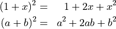
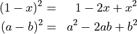
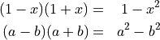
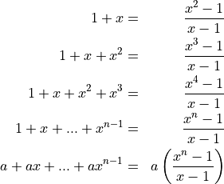
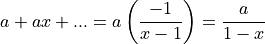
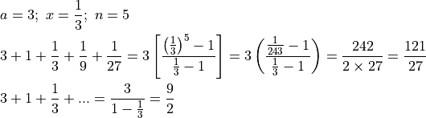
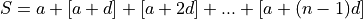
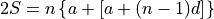
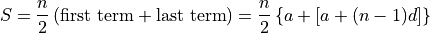

Algebraic Identities¶



Adding geometric series¶

If the absolute value of keeps getting smaller as  keeps getting larger, then as grows towards infinity, shrinks towards
keeps getting larger, then as grows towards infinity, shrinks towards  . Hence,
. Hence,


Adding series in arithmetic progression¶

Reverse the series and add element-wise. The sum will be times the average of the first and last terms of the series.

